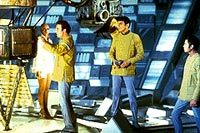
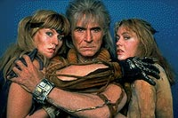
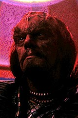
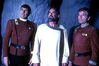
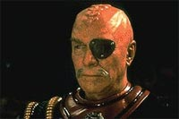

|
Os
viles de Jornada nas Estrelas, Parte I
 Aproveitando
a deixa sobre os Romulanos que comentei no ms passado, resolvi
fazer uma reviso sobre os "viles" de Jornada e a sua
contribuio para as histrias contadas na tela grande. Aproveitando
a deixa sobre os Romulanos que comentei no ms passado, resolvi
fazer uma reviso sobre os "viles" de Jornada e a sua
contribuio para as histrias contadas na tela grande.
Na indstria do cinema, os produtores vivem um certo dilema em
inovar ou relativizar algumas questes relacionadas ao gosto do pblico
ou tentar agrad-lo sempre. Existe a possibilidade de criar mais
calor do que luz, provocar uma reao negativa e, com isso, levar
um filme a um relativo fracasso nas bilheterias. Ao mesmo tempo, se
tenta seguir um padro, se busca criar algo de novo ou especfico
para marcar um certo tipo de produo.
Jornada nas Estrelas um tipo que no tem o hbito de
fazer distino clara entre bem e mal, justo e injusto, certo e
errado. Por esta razo, ela est longe de ser considerada maniquesta,
ao contrrio de muitas coisas que vemos por a. Desde o incio, e
at hoje, h uma certa zona nebulosa e no-concluda nas
aventuras vividas na televiso e no cinema.
Digo isto, porque assim foi o seu esprito criador, que mantido
em linhas gerais pelos co-produtores das suas franquias atuais.
Apesar do fato de que muita gente continua achando a Federao
sempre representando o bem e os demais povos representando o mal. No
bem assim! Jornada conta a histria da Federao atravs
da Frota Estelar e a busca por se relacionar com novas formas de
vida, aprendendo com elas e ensinando-as alguma coisa tambm.
claro que a humanidade representada pelo melhor dos seus exemplos
atravs da tripulao da(s) Enterprise(s), DS9 e Voyager, mas ela
est em contnuo aperfeioamento medida experimenta novos
relacionamentos e tenta manter ou defender os seus interesses. Para
uma organizao pacifista como a Federao, no h inimigos,
mas adversrios.
Assim, tendo feito essa ressalva, podemos botar para quebrar e falar
dos "viles" mostrados pelas sries na televiso e no
cinema. Em primeiro lugar, vamos dar uma repassada na Srie Clssica,
deixando a Nova Gerao para depois.
 Naquela
problemtica estria no cinema, em "Jornada nas Estrelas -
O Filme", no h um vilo propriamente dito, pois a
V'Ger est procura de seu criador e no admite que nada se
ponha no seu caminho. Esta uma das origens da confuso responsvel
por impedir uma aceitao mais popular desse filme. No caso de "A
Ira de Khan", este problema foi melhor tratado, embora Khan
no seja, em si mesmo, uma reencarnao do mal. Ele foi um erro
de engenharia gentica, que tentou criar um ser superior
artificialmente. O resultado foi a sua busca de poder excessivo e a
tentativa de conquistar a Terra. Da, o exlio no espao com um
bando de seguidores. Encontrado casualmente por Kirk, ele buscou
perseguir o seu intuito ao se apossar da nave. O prprio Kirk
reconheceu a complexidade do problema e quebrou o galho de Khan,
deixando-o no planeta Ceti Alfa 5 como demonstrao de respeito e
forma de lhe dar uma segunda chance.
 Na
verso do cinema, um acidente astronmico traz Khan de volta
cena e o envolve na trama pelo controle do Projeto Genesis. A recriao
de vida num planeta morto serve como metfora para a nova
oportunidade de Khan se reerguer e conquistar espao. Isto est
somado sua imensa amargura por ter perdido a sua mulher e ao
sentimento de vingana em relao a Kirk.
 Ento,
vemos a batalha dos espritos em conflito representada pelo
confronto entre a Enterprise e a Reliant. No tendo como destruir o
seu inimigo sem ser destrudo tambm, Khan s no teve sucesso
por conta da interveno de Spock.
Nos outros filmes, no h um "vilo" digno deste nome,
nem mesmo prximo do drama vivido por Khan, atravs da maravilhosa
atuao de Ricardo Montalban. No d para levar a srio o que
aparece depois, como aquele Klingon que matou David, o filho de
Kirk, para obter o segredo do Genesis, em " Procura de
Spock".
 O
ser totalmente equivocado de "A ltima Fronteira"
que se faz passar por Deus uma piada de mau gosto. Em "A
Volta para Casa" , a "vilania" prxima do
primeiro filme. A verdade que a falta de viso dos terrqueos
quase faz a vaca ir pro brejo, por conta da volta da sonda aliengena.
 Mas
em "A Terra Desconhecida" o prmio de melhor atuao
vai para o general Klingon Chang, por conta da grande interpretao
de Cristopher Plummer. Neste filme, a "vilania"
dividida entre os Klingons e alguns dos oficiais da Frota Estelar,
que no queriam a construo da paz. Embora isto tenha
desagradado a Gene Roddenberry, h quem goste, dizendo que a
revolta funcionou bem para a boa aceitao do filme pelo pblico.
O caso da Nova Gerao fica para o ms que vem...
Cludio
Silveira escreve regularmente sobre os filmes com
exclusividade para o Trek Brasilis
|